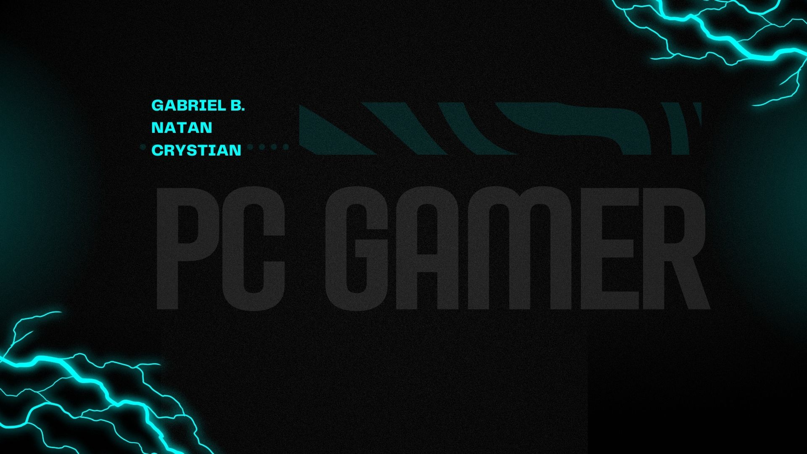

Meu nome é Natan tenho 17 anos, gosto de
jogar basquete, ouvir musica e sair com meus amigos.
Estou cursando o 2º ano do ensino médio no SESI/SENAI
de São josé, tenho varios amigos na escola e pretendo
sair de la como um ótimo programador.
Projetos:
Projeto 1:PC dos sonhos
Para este trabalho os alunos se dividiram em grupos para montar uma
apresentação sobre "o computador dos sonhos". o trabalho consistia em
montar o computador que sempre almejamos e apresenta-lo para a turma e
a professora.

Projeto 2: microprocessadores e
microcontroladores
Nesta outra atividade nós tivemos que
montar grupos de até 4 integrantes
para montar uma apresentação sobre
microprocessadores e microcontroladores.
E depois da apresentação pronta deveriamos
apresenta-lo para todos a nossa pesquisa.